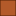

<!doctype html>
<html lang="en">
    <head>
        <meta charset="utf-8">
        <meta http-equiv="X-UA-Compatible" content="IE=edge">
        <meta name="viewport" content="initial-scale=1,user-scalable=no,maximum-scale=1,width=device-width">
        <meta name="mobile-web-app-capable" content="yes">
        <meta name="apple-mobile-web-app-capable" content="yes">
        <link rel="stylesheet" href="css/leaflet.css">
        <link rel="stylesheet" href="css/qgis2web.css"><link rel="stylesheet" href="css/fontawesome-all.min.css">
        <style>
        #map {
            width: "100%";
            height: 580px;
        }
        </style>
        <title></title>
    </head>
    <body>
        <div id="map">
        </div>
        <script src="js/qgis2web_expressions.js"></script>
        <script src="js/leaflet.js"></script>
        <script src="js/leaflet-svg-shape-markers.min.js"></script>
        <script src="js/leaflet.rotatedMarker.js"></script>
        <script src="js/leaflet.pattern.js"></script>
        <script src="js/leaflet-hash.js"></script>
        <script src="js/Autolinker.min.js"></script>
        <script src="js/rbush.min.js"></script>
        <script src="js/labelgun.min.js"></script>
        <script src="js/labels.js"></script>
        <script src="data/Departamentos_1.js"></script>
        <script src="data/CuencasMenores_2.js"></script>
        <script src="data/CuencasHidrogrficas_3.js"></script>
        <script src="data/EstacionesPluviomtricas_4.js"></script>
        <script>
        var map = L.map('map', {
            zoomControl:true, maxZoom:28, minZoom:1
        }).fitBounds([[-21.09985820565365,-86.21752236896926],[2.77123554434635,-64.16360530582047]]);
        var hash = new L.Hash(map);
        map.attributionControl.setPrefix('<a href="https://github.com/tomchadwin/qgis2web" target="_blank">qgis2web</a> &middot; <a href="https://leafletjs.com" title="A JS library for interactive maps">Leaflet</a> &middot; <a href="https://qgis.org">QGIS</a>');
        var autolinker = new Autolinker({truncate: {length: 30, location: 'smart'}});
        var bounds_group = new L.featureGroup([]);
        function setBounds() {
        }
        map.createPane('pane_GoogleMaps_0');
        map.getPane('pane_GoogleMaps_0').style.zIndex = 400;
        var layer_GoogleMaps_0 = L.tileLayer('https://mt1.google.com/vt/lyrs=r&x={x}&y={y}&z={z}', {
            pane: 'pane_GoogleMaps_0',
            opacity: 1.0,
            attribution: '',
            minZoom: 1,
            maxZoom: 28,
            minNativeZoom: 0,
            maxNativeZoom: 18
        });
        layer_GoogleMaps_0;
        map.addLayer(layer_GoogleMaps_0);
        function pop_Departamentos_1(feature, layer) {
            var popupContent = '<table>\
                    <tr>\
                        <td colspan="2">' + (feature.properties['NOMBDEP'] !== null ? autolinker.link(feature.properties['NOMBDEP'].toLocaleString()) : '') + '</td>\
                    </tr>\
                </table>';
            layer.bindPopup(popupContent, {maxHeight: 400});
        }

        function style_Departamentos_1_0() {
            return {
                pane: 'pane_Departamentos_1',
                opacity: 1,
                color: 'rgba(35,35,35,1.0)',
                dashArray: '',
                lineCap: 'butt',
                lineJoin: 'miter',
                weight: 1.0, 
                fill: true,
                fillOpacity: 1,
                fillColor: 'rgba(231,113,72,0.0)',
                interactive: true,
            }
        }
        map.createPane('pane_Departamentos_1');
        map.getPane('pane_Departamentos_1').style.zIndex = 401;
        map.getPane('pane_Departamentos_1').style['mix-blend-mode'] = 'normal';
        var layer_Departamentos_1 = new L.geoJson(json_Departamentos_1, {
            attribution: '',
            interactive: true,
            dataVar: 'json_Departamentos_1',
            layerName: 'layer_Departamentos_1',
            pane: 'pane_Departamentos_1',
            onEachFeature: pop_Departamentos_1,
            style: style_Departamentos_1_0,
        });
        bounds_group.addLayer(layer_Departamentos_1);
        function pop_CuencasMenores_2(feature, layer) {
            var popupContent = '<table>\
                    <tr>\
                        <td colspan="2">' + (feature.properties['Nombre_UH'] !== null ? autolinker.link(feature.properties['Nombre_UH'].toLocaleString()) : '') + '</td>\
                    </tr>\
                </table>';
            layer.bindPopup(popupContent, {maxHeight: 400});
        }

        function style_CuencasMenores_2_0() {
            return {
                pane: 'pane_CuencasMenores_2',
                opacity: 1,
                color: 'rgba(0,230,246,1.0)',
                dashArray: '',
                lineCap: 'butt',
                lineJoin: 'miter',
                weight: 1.0, 
                fill: true,
                fillOpacity: 1,
                fillColor: 'rgba(164,113,88,0.0)',
                interactive: true,
            }
        }
        map.createPane('pane_CuencasMenores_2');
        map.getPane('pane_CuencasMenores_2').style.zIndex = 402;
        map.getPane('pane_CuencasMenores_2').style['mix-blend-mode'] = 'normal';
        var layer_CuencasMenores_2 = new L.geoJson(json_CuencasMenores_2, {
            attribution: '',
            interactive: true,
            dataVar: 'json_CuencasMenores_2',
            layerName: 'layer_CuencasMenores_2',
            pane: 'pane_CuencasMenores_2',
            onEachFeature: pop_CuencasMenores_2,
            style: style_CuencasMenores_2_0,
        });
        bounds_group.addLayer(layer_CuencasMenores_2);
        function pop_CuencasHidrogrficas_3(feature, layer) {
            var popupContent = '<table>\
                    <tr>\
                        <td colspan="2">' + (feature.properties['NOMBRE'] !== null ? autolinker.link(feature.properties['NOMBRE'].toLocaleString()) : '') + '</td>\
                    </tr>\
                </table>';
            layer.bindPopup(popupContent, {maxHeight: 400});
        }

        function style_CuencasHidrogrficas_3_0(feature) {
            switch(String(feature.properties['q2wHide_NOMB_UH_N1'])) {
                case 'Región Hidrográfica del Amazonas':
                    return {
                pane: 'pane_CuencasHidrogrficas_3',
                opacity: 1,
                color: 'rgba(40,84,0,0.649)',
                dashArray: '',
                lineCap: 'butt',
                lineJoin: 'miter',
                weight: 1.0, 
                fill: true,
                fillOpacity: 1,
                fillColor: 'rgba(93,200,81,0.649)',
                interactive: true,
            }
                    break;
                case 'Región Hidrografica del Pacífico':
                    return {
                pane: 'pane_CuencasHidrogrficas_3',
                opacity: 1,
                color: 'rgba(103,81,8,0.649)',
                dashArray: '',
                lineCap: 'butt',
                lineJoin: 'miter',
                weight: 1.0, 
                fill: true,
                fillOpacity: 1,
                fillColor: 'rgba(245,231,26,0.649)',
                interactive: true,
            }
                    break;
                case 'Región Hidrográfica del Titicaca':
                    return {
                pane: 'pane_CuencasHidrogrficas_3',
                opacity: 1,
                color: 'rgba(77,29,4,0.649)',
                dashArray: '',
                lineCap: 'butt',
                lineJoin: 'miter',
                weight: 1.0, 
                fill: true,
                fillOpacity: 1,
                fillColor: 'rgba(179,90,42,0.649)',
                interactive: true,
            }
                    break;
            }
        }
        map.createPane('pane_CuencasHidrogrficas_3');
        map.getPane('pane_CuencasHidrogrficas_3').style.zIndex = 403;
        map.getPane('pane_CuencasHidrogrficas_3').style['mix-blend-mode'] = 'normal';
        var layer_CuencasHidrogrficas_3 = new L.geoJson(json_CuencasHidrogrficas_3, {
            attribution: '',
            interactive: true,
            dataVar: 'json_CuencasHidrogrficas_3',
            layerName: 'layer_CuencasHidrogrficas_3',
            pane: 'pane_CuencasHidrogrficas_3',
            onEachFeature: pop_CuencasHidrogrficas_3,
            style: style_CuencasHidrogrficas_3_0,
        });
        bounds_group.addLayer(layer_CuencasHidrogrficas_3);
        function pop_EstacionesPluviomtricas_4(feature, layer) {
            var popupContent = '<table>\
                    <tr>\
                        <th scope="row">Estación</th>\
                        <td>' + (feature.properties['Estacion'] !== null ? autolinker.link(feature.properties['Estacion'].toLocaleString()) : '') + '</td>\
                    </tr>\
                    <tr>\
                        <th scope="row">Longitud</th>\
                        <td>' + (feature.properties['long_x'] !== null ? autolinker.link(feature.properties['long_x'].toLocaleString()) : '') + '</td>\
                    </tr>\
                    <tr>\
                        <th scope="row">Latitud</th>\
                        <td>' + (feature.properties['lat_y'] !== null ? autolinker.link(feature.properties['lat_y'].toLocaleString()) : '') + '</td>\
                    </tr>\
                    <tr>\
                        <th scope="row">Enero</th>\
                        <td>' + (feature.properties['Enero'] !== null ? autolinker.link(feature.properties['Enero'].toLocaleString()) : '') + '</td>\
                    </tr>\
                    <tr>\
                        <th scope="row">Febrero</th>\
                        <td>' + (feature.properties['Febrero'] !== null ? autolinker.link(feature.properties['Febrero'].toLocaleString()) : '') + '</td>\
                    </tr>\
                    <tr>\
                        <th scope="row">Marzo</th>\
                        <td>' + (feature.properties['Marzo'] !== null ? autolinker.link(feature.properties['Marzo'].toLocaleString()) : '') + '</td>\
                    </tr>\
                    <tr>\
                        <th scope="row">Abril</th>\
                        <td>' + (feature.properties['Abril'] !== null ? autolinker.link(feature.properties['Abril'].toLocaleString()) : '') + '</td>\
                    </tr>\
                    <tr>\
                        <th scope="row">Mayo</th>\
                        <td>' + (feature.properties['Mayo'] !== null ? autolinker.link(feature.properties['Mayo'].toLocaleString()) : '') + '</td>\
                    </tr>\
                    <tr>\
                        <th scope="row">Junio</th>\
                        <td>' + (feature.properties['Junio'] !== null ? autolinker.link(feature.properties['Junio'].toLocaleString()) : '') + '</td>\
                    </tr>\
                    <tr>\
                        <th scope="row">Julio</th>\
                        <td>' + (feature.properties['Julio'] !== null ? autolinker.link(feature.properties['Julio'].toLocaleString()) : '') + '</td>\
                    </tr>\
                    <tr>\
                        <th scope="row">Agosto</th>\
                        <td>' + (feature.properties['Agosto'] !== null ? autolinker.link(feature.properties['Agosto'].toLocaleString()) : '') + '</td>\
                    </tr>\
                    <tr>\
                        <th scope="row">Septiembre</th>\
                        <td>' + (feature.properties['Septiembre'] !== null ? autolinker.link(feature.properties['Septiembre'].toLocaleString()) : '') + '</td>\
                    </tr>\
                    <tr>\
                        <th scope="row">Octubre</th>\
                        <td>' + (feature.properties['Octubre'] !== null ? autolinker.link(feature.properties['Octubre'].toLocaleString()) : '') + '</td>\
                    </tr>\
                    <tr>\
                        <th scope="row">Noviembre</th>\
                        <td>' + (feature.properties['Noviembre'] !== null ? autolinker.link(feature.properties['Noviembre'].toLocaleString()) : '') + '</td>\
                    </tr>\
                    <tr>\
                        <th scope="row">Diciembre</th>\
                        <td>' + (feature.properties['Diciembre'] !== null ? autolinker.link(feature.properties['Diciembre'].toLocaleString()) : '') + '</td>\
                    </tr>\
                    <tr>\
                        <th scope="row">Total</th>\
                        <td>' + (feature.properties['Total_2'] !== null ? autolinker.link(feature.properties['Total_2'].toLocaleString()) : '') + '</td>\
                    </tr>\
                    <tr>\
                        <th scope="row">Departamento</th>\
                        <td>' + (feature.properties['NOMBDEP'] !== null ? autolinker.link(feature.properties['NOMBDEP'].toLocaleString()) : '') + '</td>\
                    </tr>\
                    <tr>\
                        <th scope="row">Provincia</th>\
                        <td>' + (feature.properties['NOMBPROV'] !== null ? autolinker.link(feature.properties['NOMBPROV'].toLocaleString()) : '') + '</td>\
                    </tr>\
                    <tr>\
                        <th scope="row">Distrito</th>\
                        <td>' + (feature.properties['NOMBDIST'] !== null ? autolinker.link(feature.properties['NOMBDIST'].toLocaleString()) : '') + '</td>\
                    </tr>\
                    <tr>\
                        <th scope="row">UBIGEO</th>\
                        <td>' + (feature.properties['UBIGEO'] !== null ? autolinker.link(feature.properties['UBIGEO'].toLocaleString()) : '') + '</td>\
                    </tr>\
                    <tr>\
                        <th scope="row">Cuenca</th>\
                        <td>' + (feature.properties['NOMBRE'] !== null ? autolinker.link(feature.properties['NOMBRE'].toLocaleString()) : '') + '</td>\
                    </tr>\
                    <tr>\
                        <th scope="row">Tipo</th>\
                        <td>' + (feature.properties['Tipo'] !== null ? autolinker.link(feature.properties['Tipo'].toLocaleString()) : '') + '</td>\
                    </tr>\
                    <tr>\
                        <th scope="row">Altitud</th>\
                        <td>' + (feature.properties['SRTM 90 3a'] !== null ? autolinker.link(feature.properties['SRTM 90 3a'].toLocaleString()) : '') + '</td>\
                    </tr>\
                </table>';
            layer.bindPopup(popupContent, {maxHeight: 400});
        }

        function style_EstacionesPluviomtricas_4_0() {
            return {
                pane: 'pane_EstacionesPluviomtricas_4',
                shape: 'triangle',
                radius: 8.0,
                opacity: 1,
                color: 'rgba(128,17,25,1.0)',
                dashArray: '',
                lineCap: 'butt',
                lineJoin: 'miter',
                weight: 2.0,
                fill: true,
                fillOpacity: 1,
                fillColor: 'rgba(219,30,42,1.0)',
                interactive: true,
            }
        }
        map.createPane('pane_EstacionesPluviomtricas_4');
        map.getPane('pane_EstacionesPluviomtricas_4').style.zIndex = 404;
        map.getPane('pane_EstacionesPluviomtricas_4').style['mix-blend-mode'] = 'normal';
        var layer_EstacionesPluviomtricas_4 = new L.geoJson(json_EstacionesPluviomtricas_4, {
            attribution: '',
            interactive: true,
            dataVar: 'json_EstacionesPluviomtricas_4',
            layerName: 'layer_EstacionesPluviomtricas_4',
            pane: 'pane_EstacionesPluviomtricas_4',
            onEachFeature: pop_EstacionesPluviomtricas_4,
            pointToLayer: function (feature, latlng) {
                var context = {
                    feature: feature,
                    variables: {}
                };
                return L.shapeMarker(latlng, style_EstacionesPluviomtricas_4_0(feature));
            },
        });
        bounds_group.addLayer(layer_EstacionesPluviomtricas_4);
        map.addLayer(layer_EstacionesPluviomtricas_4);
        var baseMaps = {};
        L.control.layers(baseMaps,{' Estaciones Pluviométricas': layer_EstacionesPluviomtricas_4,'Cuencas Hidrográficas<br /><table><tr><td style="text-align: center;"></td><td>Región Hidrográfica del Amazonas</td></tr><tr><td style="text-align: center;"></td><td>Región Hidrografica del Pacífico</td></tr><tr><td style="text-align: center;"></td><td>Región Hidrográfica del Titicaca</td></tr></table>': layer_CuencasHidrogrficas_3,' Cuencas Menores': layer_CuencasMenores_2,' Departamentos': layer_Departamentos_1,"Google Maps": layer_GoogleMaps_0,},{collapsed:false}).addTo(map);
        setBounds();
        </script>
    </body>
</html>
